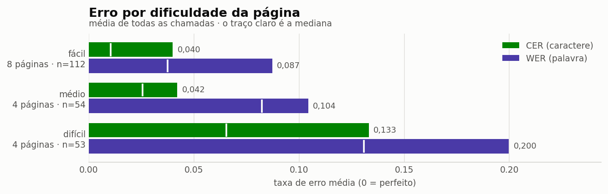
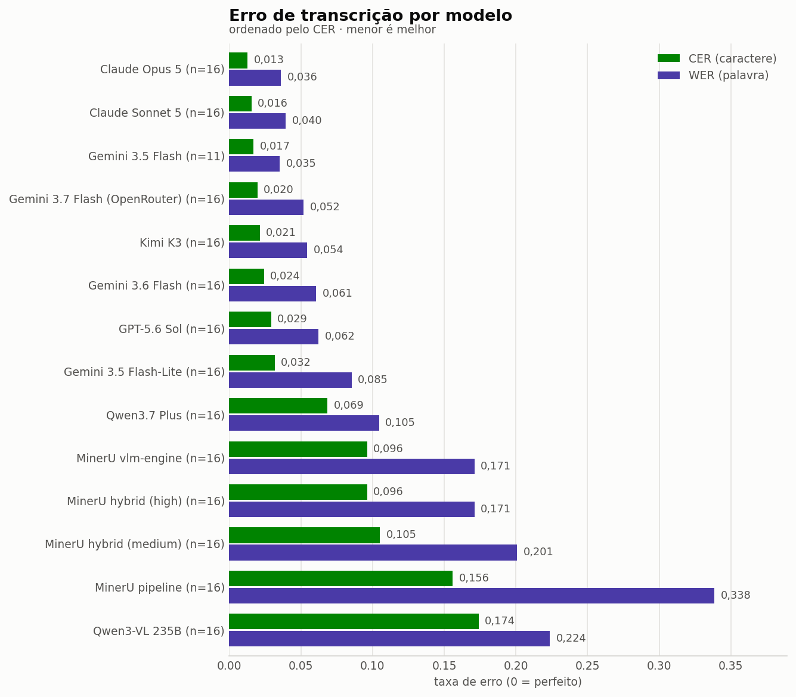
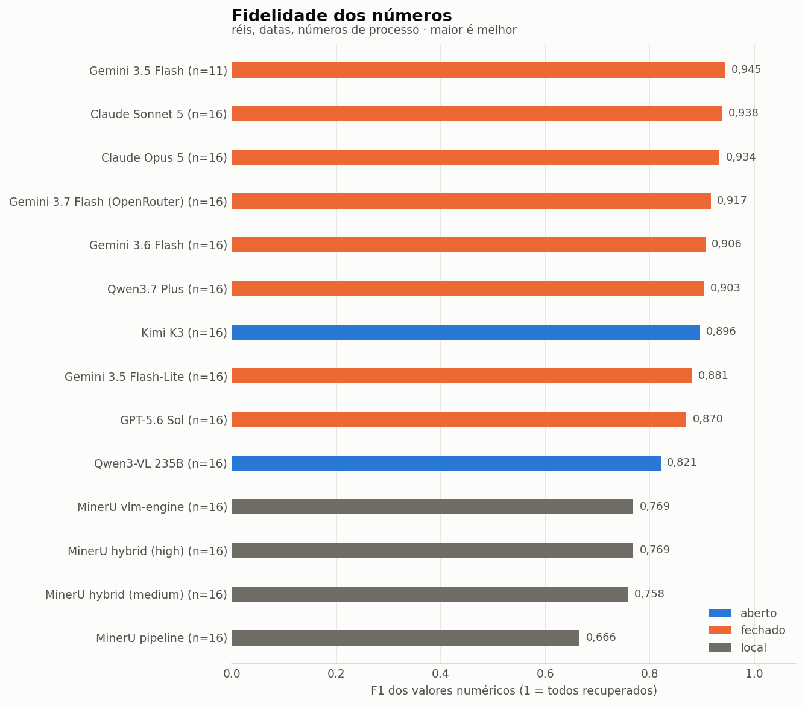
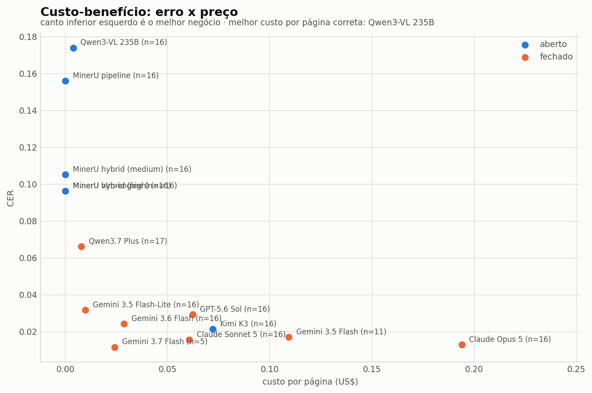
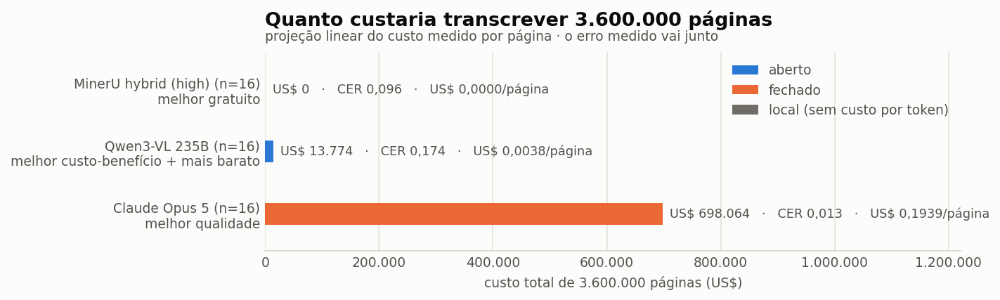
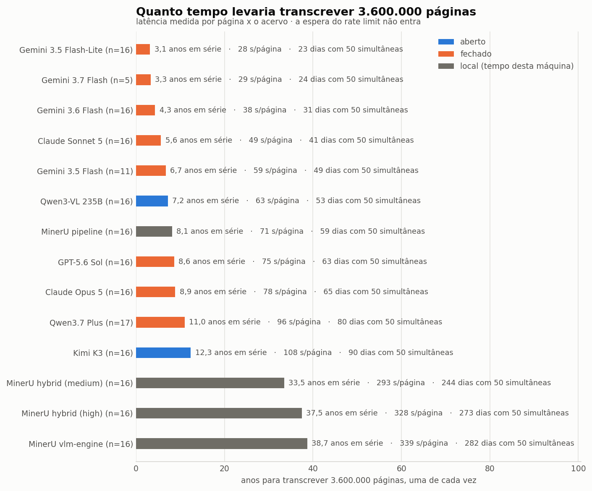
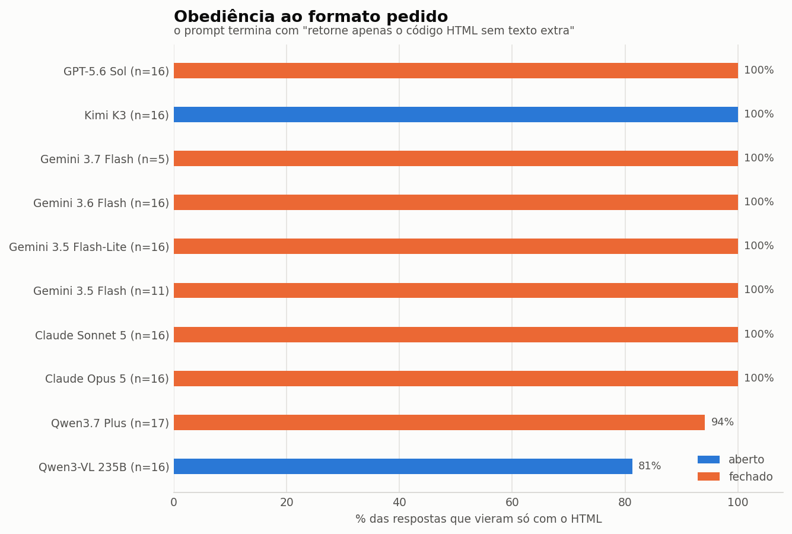

Transcrição de documentos históricos com modelos de linguagem
Viabilidade e qualidade da transcrição automática de páginas do Diário Oficial (1891 a 1930), comparando modelos multimodais acessados pelo OpenRouter, pela API do Google e um analisador de documentos executado em máquina local.
1. Introdução
Acervos históricos brasileiros existem hoje sobretudo como imagens. São milhões de páginas digitalizadas que não podem ser pesquisadas por texto, e convertê-las é o que separa um arquivo de um corpus utilizável. O custo dessa conversão, em dinheiro e em tempo, decide se ela acontece ou não.
Esta avaliação mede se modelos de linguagem multimodais são viáveis para essa tarefa, e a que preço. A pergunta tem duas metades inseparáveis. A primeira é de qualidade, ou seja, quanto de uma página sobrevive à transcrição automática, e o que se perde no caminho, se palavras inteiras, se caracteres isolados, se os números. A segunda é de custo, isto é, quanto se paga por página e o que esse pagamento compra em precisão.
O acesso aos modelos comerciais é feito pelo OpenRouter, que expõe fornecedores diferentes sob uma interface única e informa o valor efetivamente cobrado por chamada, o que torna a comparação de custo possível sem depender de tabelas de preço publicadas. Como contraponto, entram na mesma tabela sistemas que não são modelos de linguagem instruídos, os backends do MinerU [4], um analisador de documentos que roda em hardware próprio e sem custo por token.
O trabalho de Sharma e colaboradores [1] propõe um arcabouço metodológico para avaliar modelos de linguagem em OCR de documentos históricos e sustenta duas escolhas adotadas aqui, a de medir erro por palavra e por caractere em conjunto, e a de tratar transcrição de acervo antigo como problema distinto do OCR moderno, por causa da grafia de época e do layout em colunas.
2. Metodologia
2.1 O conjunto de dados
Dezesseis páginas do Diário Oficial, distribuídas por cinco décadas, sendo elas 1891, 1900, 1910, 1920 e 1930.
Cada documento é uma pasta com dois arquivos que importam.
Dataset/1891-08-01_p606/
1891_0606_Dificil.jpg a entrada, que é a página digitalizada
1891-08-01_p606.html a referência, que é a transcrição conferida
| Característica | Faixa | Média |
|---|---|---|
| Tamanho da imagem | 0,9 a 1,9 MB | 1,3 MB |
| Resolução | 1558×1994 a 2335×3454 px | n/a |
| Caracteres na referência | 4.058 a 9.119 | 6.564 |
| Palavras na referência | 673 a 1.571 | 1.066 |
Os três graus de dificuldade
As dezesseis páginas não são equivalentes entre si. O que separa uma da outra não é o assunto nem a década, é a estrutura visual da folha, e ela foi classificada em três graus.
Fácil é a página basicamente só de texto, corrido em duas ou três colunas, com títulos e fios de separação e nenhuma tabela. Médio é a página que traz algo a mais, tipicamente uma tabela simples embutida no texto, como um balancete de poucas linhas ou um quadro de duas colunas. Difícil é a página de estrutura composta, com grade numérica de muitas colunas, cabeçalho de dois níveis, tabela impressa girada noventa graus na folha ou ilustração no meio do texto.
| Grau | Páginas | O que caracteriza |
|---|---|---|
| fácil | 8 | texto corrido em colunas, sem tabela alguma |
| médio | 4 | uma tabela simples embutida no texto |
| difícil | 4 | grade de muitas colunas, cabeçalho de dois níveis, tabela girada ou ilustração |
Como a referência foi produzida
A referência é uma transcrição em HTML que preserva o layout original, com colunas, tabelas e quebras de linha, e preserva também a grafia de época, com formas como sabbado, diario e pedio.
Ela foi produzida em duas etapas. Na primeira, o modelo Claude Opus 5.1 gerou a transcrição da página digitalizada e detectou as palavras cuja grafia difere do padrão atual. Na segunda, essa saída foi avaliada e corrigida manualmente, página por página.
A prova dessa conferência está registrada nos casos validados, na forma de um PDF com marcações coloridas sobre a página, conforme a convenção abaixo.
| Marcação | Significado |
|---|---|
| rosa | palavra fora do padrão ortográfico atual, que deve ser preservada como está |
| vermelho | transcrição errada, corrigida na referência |
| amarelo | incerteza de transcrição, quando a imagem não permite decidir com segurança |
Os arquivos de validação acompanham o conjunto de dados, como em
Dataset/1891-08-01_p606/diario oficial__pag_0606_avaliacao_manual.pdf.
A referência é a verdade contra a qual tudo é medido, por definição e não por perfeição. Um erro remanescente nela penaliza o sistema que acertou a página, o que faz da qualidade do conjunto o limite superior de todo o estudo. É também o motivo de a conferência manual existir, já que uma referência gerada apenas por modelo mediria concordância entre modelos, e não fidelidade à página.
2.2 O que é um provedor
Um provedor é a empresa que hospeda o modelo e responde à chamada. Essa distinção não é burocrática. Um modelo de pesos abertos como o Kimi K3 pode ser servido por dezoito casas diferentes, e elas não entregam a mesma coisa. A quantização varia entre elas, aparecendo como fp4, mxfp4, fp8 ou bf16 conforme quem atende, e com ela variam a qualidade da saída e o tempo de resposta. O preço também difere, e o mesmo modelo aberto chega a custar o dobro na saída conforme a casa escolhida.
Além da casa, cada fornecedor vende o mesmo modelo em faixas de serviço. O GPT-5.6 Sol, por exemplo, é oferecido em três faixas com a mesma janela de contexto, custando 1 e 5 dólares por milhão de tokens na faixa flexível, 2 e 10 na padrão, e 4 e 20 na prioritária. A faixa muda a posição na fila do provedor, e portanto muda o tempo de resposta.
Por que fixar a hospedagem
Sem fixação, o roteador escolhe a casa e a faixa a cada chamada, segundo disponibilidade e carga. Duas consequências ruins decorrem disso. A primeira é que a qualidade medida passa a depender de quem atendeu, e a variação entra na média como se fosse propriedade do modelo. A segunda, e mais grave para este estudo, é que o tempo deixa de ser comparável, porque uma chamada servida por uma casa congestionada, ou numa faixa de menor prioridade, demora mais sem que isso diga nada sobre o modelo.
Neste trabalho cada sistema declara uma hospedagem única, sempre a casa de origem, isto é, a empresa que treinou o modelo, na faixa padrão. Um desvio para outra casa é tratado como falha, e não como alternativa, porque a resposta que viesse de outro lugar seria outro sistema com o mesmo nome. O resultado é que latência e custo medidos pertencem a uma configuração estável e reproduzível, e não à sorte do roteamento no momento da chamada.
2.3 As três vias de consulta
Os sistemas avaliados chegam por três caminhos distintos, e cada um tem implicações diferentes sobre o que se pode afirmar a respeito de custo.
Via 1, OpenRouter
O OpenRouter [2] é um intermediário entre a aplicação e os fornecedores. Em vez de integrar separadamente a API de cada empresa, com autenticação, formato de requisição e contabilidade próprios, envia-se uma única requisição no formato de conversa, indicando o identificador do modelo desejado. Por essa via passam os modelos da OpenAI, da Anthropic, da Alibaba e da Moonshot.
A vantagem decisiva é que a resposta traz o valor efetivamente cobrado pela chamada, incluindo os tokens da imagem, que têm precificação própria e variam por fornecedor. O custo, nesta via, é medição e não estimativa.
Via 2, API do Google
Os modelos Gemini são chamados diretamente na API do Google [3], sem intermediário. A diferença que importa é que essa API devolve a contagem de tokens mas não devolve o valor cobrado. O custo desses modelos é portanto calculado como preço de tabela multiplicado por tokens, ficando marcado como estimativa na coluna de procedência. Ao comparar custo entre vias, essa diferença precisa ser dita.
Esta via tem ainda uma restrição operacional relevante, que é a cota do plano gratuito. Ela é contada por projeto e por modelo, e um modelo utilizado neste estudo revelou teto de vinte requisições por dia. Requisições que falham por indisponibilidade do servidor também consomem essa cota.
Via 3, execução local
O MinerU [4] é um executável que roda na própria máquina. Não há chave de API, não há custo por token e não há tokenizador comparável ao de um modelo de linguagem, de modo que os campos de token ficam vazios de propósito. O recurso consumido é tempo de GPU, e é a latência que carrega essa informação.
Foram avaliados os backends do MinerU 3.4, que não são tamanhos de um mesmo modelo e sim arquiteturas diferentes. O backend de pipeline usa detecção de layout seguida de OCR clássico, sem modelo de linguagem no caminho. O backend vlm usa um modelo de visão e linguagem, descrito em [5] e [6]. O backend híbrido combina o layout do primeiro com o texto do segundo.
Configurações comuns
| Parâmetro | Valor | Motivo |
|---|---|---|
temperature | 0,0 | Transcrição não é tarefa criativa, e a variação entre execuções deve vir do modelo e não da amostragem |
max_tokens | 32.000 | As páginas são longas, e um teto baixo corta a resposta no meio, produzindo erro catastrófico que parece incompetência do modelo mas é configuração |
| contabilidade de uso | ativada | Faz o custo real vir junto da resposta na via do OpenRouter |
| hospedagem | fixa | Casa de origem e faixa padrão, conforme explicado acima |
| desvio de hospedagem | proibido | Uma resposta de outra casa seria outro sistema com o mesmo nome |
| streaming | desligado | Sem streaming o motivo de encerramento sempre chega, e é ele que denuncia resposta truncada |
2.4 As métricas
Antes de qualquer comparação, os dois lados passam pela mesma normalização. A marcação, seja HTML ou Markdown, vira texto. A tipografia é canonizada, tudo vai para minúsculas, a pontuação sai das bordas das palavras e as palavras quebradas por hífen no fim da linha são reunidas. Sem isso, o erro mediria coincidência de estilo em vez de fidelidade de transcrição.
WER, taxa de erro por palavra
São as substituições, remoções e inserções necessárias para transformar a transcrição na referência, divididas pelo número de palavras da referência. O objetivo é responder quantas palavras da página o sistema errou. A métrica é padrão na avaliação de OCR histórico [1].
Limitações. O valor pode passar de 1,0, porque inserções entram no numerador sem existir na referência. Erra por excesso quando o sistema acerta as palavras mas troca a ordem, e ler as três colunas do jornal fora de ordem custa WER de 0,67 mesmo com transcrição perfeita. Além disso não distingue o tipo de erro, de modo que omitir uma coluna, alucinar um parágrafo e ler mal uma palavra entram na mesma soma.
CER, taxa de erro por caractere
A mesma conta, em caracteres. O objetivo é medir o erro numa unidade mais fina, em que um acento trocado custa um caractere e não a palavra inteira.
Limitações. Herda a insensibilidade à ordem que o WER tem e, por ser mais tolerante, esconde erros que tornam uma palavra irreconhecível. É a mais estável das duas e por isso ordena melhor os sistemas.
num_f1, fidelidade dos números
Comparação por multiconjunto dos valores numéricos, como réis no formato 1:770$300, leituras meteorológicas, números de processo e datas. O objetivo vem de uma constatação prática, a de que um modelo pode ter WER baixo e ser inútil para pesquisa histórica se errar sistematicamente os números.
Limitações. Ignora posição, de modo que um valor certo no lugar errado conta como acerto. Também não pondera gravidade, e errar o ano de um decreto pesa o mesmo que errar o número de uma página.
Obediência ao formato pedido
O prompt termina pedindo que o modelo retorne apenas o código HTML, sem texto extra. Alguns modelos abrem com uma saudação ou fecham com um comentário sobre as escolhas feitas. O objetivo é medir essa desobediência à parte, porque ela quase não move o WER mas gera trabalho manual para quem for usar a saída.
Limitações. É binária e sintática, portanto não distingue uma frase de cortesia de um comentário técnico relevante. Uma cerca de código envolvendo toda a resposta é tolerada por ser formatação. A métrica não se aplica aos sistemas que não recebem instrução, e nesses casos a coluna fica vazia.
Custo de token
Pela via do OpenRouter o valor vem medido. Pela via da API do Google é calculado a partir da tabela declarada. Na execução local é zero.
Limitações. A imagem é convertida em tokens de entrada e cada família tokeniza de um jeito, tanto que a mesma página custou cerca de 2.600 tokens em uma família e 4.600 em outra. Preços mudam, e os de um dos modelos avaliados variaram pela metade entre duas consultas separadas por três semanas. Por fim, o custo de API é apenas parte do custo real, já que o tempo de revisão humana cresce com o erro e é ordens de grandeza maior.
O que estas métricas não medem. Modernização ortográfica, ou seja, quando um modelo escreve sábado onde a página traz sabbado, entra no WER como um erro qualquer, misturado às leituras erradas. Estrutura de tabela, porque a árvore do HTML não é comparada. Ordem de leitura, que não é isolada do erro de transcrição.
2.5 Do documento digitalizado ao gráfico
- Coleta. Cada chamada envia a imagem codificada e o prompt. A resposta é gravada em uma pasta própria com quatro arquivos, sendo eles o texto devolvido, o corpo bruto do provedor com uma entrada por tentativa, e os dois lados já normalizados, escritos na etapa seguinte. Uma linha por chamada vai para um índice tabular com tokens, custo, tempo e erro.
- Normalização. Referência e transcrição passam pela mesma pipeline, com detecção de formato, extração do texto visível, canonização e tokenização. O resultado é um bloco de texto por página, sem segmentação em regiões.
- Pontuação. As métricas são calculadas sobre esse par e escritas em duas tabelas, uma com uma linha por chamada e outra com o resumo por sistema. Este passo é offline e repetível, de modo que mudar a definição de uma métrica ou corrigir um preço custa apenas rodá-lo de novo, sem gastar API.
- Agregação e figuras. Todas as execuções são reunidas e agregadas por sistema, sempre por chamada e nunca por média de médias. Confiabilidade e qualidade permanecem separadas, porque a taxa de sucesso conta todas as chamadas enquanto WER, CER e custo contam apenas as válidas, isto é, as que responderam e não foram truncadas.
3. Resultados
A tabela abaixo reúne todos os sistemas avaliados, ordenados pela taxa de erro por caractere. A coluna de chamadas mostra quantas foram bem-sucedidas sobre quantas foram tentadas, e a leitura de qualquer linha precisa levar esse número em conta, já que uma média sobre uma página não é comparável a uma média sobre dezesseis.
| Sistema | Tipo | Via | Páginas | CER | WER | num_f1 | HTML limpo | US$ por página | Segundos |
|---|---|---|---|---|---|---|---|---|---|
| Claude Opus 5Anthropic | fechado | OpenRouter | 16/16 | 0,013 | 0,036 | 0,934 | 100% | 0,1939 | 78 |
| Claude Sonnet 5Anthropic | fechado | OpenRouter | 16/16 | 0,016 | 0,040 | 0,938 | 100% | 0,0607 | 49 |
| Gemini 3.5 FlashparcialGoogle | fechado | API do Google | 11/16 | 0,017 | 0,035 | 0,945 | 100% | 0,1093 | 59 |
| Gemini 3.7 Flash (OpenRouter)Google | fechado | OpenRouter | 16/16 | 0,020 | 0,052 | 0,917 | 100% | 0,0295 | 23 |
| Kimi K3Moonshot | aberto | OpenRouter | 16/16 | 0,021 | 0,054 | 0,896 | 100% | 0,0721 | 108 |
| Gemini 3.6 FlashGoogle | fechado | API do Google | 16/16 | 0,024 | 0,061 | 0,906 | 100% | 0,0287 | 38 |
| GPT-5.6 SolOpenAI | fechado | OpenRouter | 16/16 | 0,029 | 0,062 | 0,870 | 100% | 0,0622 | 75 |
| Gemini 3.5 Flash-LiteGoogle | fechado | API do Google | 16/16 | 0,032 | 0,085 | 0,881 | 100% | 0,0099 | 28 |
| Qwen3.7 PlusAlibaba | fechado | OpenRouter | 16/16 | 0,069 | 0,105 | 0,903 | 94% | 0,0077 | 95 |
| MinerU hybrid (high)OpenDataLab | aberto | execução local | 16/16 | 0,096 | 0,171 | 0,769 | n/a | grátis | 328 |
| MinerU vlm-engineOpenDataLab | aberto | execução local | 16/16 | 0,096 | 0,171 | 0,769 | n/a | grátis | 339 |
| MinerU hybrid (medium)OpenDataLab | aberto | execução local | 16/16 | 0,105 | 0,201 | 0,758 | n/a | grátis | 293 |
| MinerU pipelineOpenDataLab | aberto | execução local | 16/16 | 0,156 | 0,338 | 0,666 | n/a | grátis | 71 |
| Qwen3-VL 235BAlibaba | aberto | OpenRouter | 16/16 | 0,174 | 0,224 | 0,821 | 81% | 0,0038 | 63 |
Os gráficos abaixo ajudam a visualizar as informações da tabela acima. Vale ressaltar que o n que acompanha os rótulos não significa a mesma coisa em todos eles, porque nem todos agregam a mesma unidade.
Nas figuras que comparam sistemas — erro de transcrição, fidelidade dos números, custo e benefício, e as duas projeções do acervo — o n é o número de páginas distintas por trás da média daquele sistema, e não o de chamadas. A distinção importa porque uma página remedida, seja porque a execução foi retomada, seja porque foi refeita depois, não é uma página a mais: ela entra na conta uma única vez, valendo a medição mais recente entre as válidas. É por isso que o n aparece no rótulo de todos, e não só de quem tem pouco: marcar apenas os menores deixaria implícito que os demais são comparáveis entre si. Um sistema com n=16 cobriu o conjunto inteiro; abaixo disso ele é marcado como parcial na tabela e não disputa os superlativos das figuras de projeção, porque uma média sobre poucas páginas não é a mesma afirmação que uma média sobre dezesseis.
No gráfico de erro por dificuldade a unidade é outra, porque a pergunta é outra: ali não se compara sistema com sistema, e sim página com página. Cada transcrição de cada sistema conta como uma observação daquele grau, então o n é o número de chamadas, e a quantidade de páginas aparece ao lado, separada. Uma linha que diz 8 páginas · n=112 são, portanto, oito páginas fáceis observadas cento e doze vezes — as oito multiplicadas pelos catorze sistemas que as transcreveram.







4. Uso de inteligência artificial no desenvolvimento
Todo o desenvolvimento deste trabalho foi acompanhado por assistentes de inteligência artificial, em três frentes. A primeira foi o debate das decisões metodológicas, com discussão de alternativas, questionamento de premissas e revisão de conclusões. A segunda foi a geração de código, do cliente de API às rotinas de métrica e às figuras. A terceira foi a otimização e revisão do código já existente, incluindo simplificação, remoção de trechos sem uso e correção de defeitos encontrados durante o trabalho.
O uso alcançou também a construção do conjunto de dados, conforme descrito na seção 2.1, em que a transcrição de referência foi gerada por modelo e depois conferida à mão.
Todas as ações foram supervisionadas. Cada alteração de código foi revisada antes de entrar, cada execução paga foi autorizada caso a caso, e os resultados apresentados vêm de medições registradas em arquivo, e não de afirmações do assistente. Onde uma decisão dependeu de julgamento, como o critério de custo e benefício ou a faixa de preço adotada como base de comparação, ela foi tomada de forma explícita e está documentada no repositório.
5. Referências
- SHARMA, A. et al. Evaluating LLMs for Historical Document OCR, A Methodological Framework for Digital Humanities. Arquivo local em Artigos/FonteDesconhecida/Evaluating LLMs for Historical Document OCR A.pdf
- OPENROUTER. Documentação da API. Disponível em https://openrouter.ai/docs. Consulta em setembro de 2026
- GOOGLE. Gemini API, documentação para desenvolvedores. Disponível em https://ai.google.dev/gemini-api/docs. Consulta em setembro de 2026
- OPENDATALAB. MinerU, repositório do projeto. Disponível em https://github.com/opendatalab/MinerU. Artigo de apresentação da ferramenta em arquivo local, Artigos/FonteDesconhecida/MinerU.pdf
- MinerU2.5, A Decoupled Vision-Language Model for Efficient High-Resolution Document Parsing. Arquivo local em Artigos/FonteDesconhecida/MinerU2-5.pdf
- MinerU2.5-Pro, Pushing the Limits of Data-Centric Document Parsing at Scale. Arquivo local em Artigos/FonteDesconhecida/MinerU2-5Pro.pdf